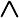
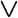
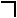

by Abraham Kandel
CRC Press, CRC Press LLC
ISBN: 084934297x Pub Date: 11/01/91
|
|
Fuzzy Expert Systems
by Abraham Kandel CRC Press, CRC Press LLC ISBN: 084934297x Pub Date: 11/01/91 |
| Previous | Table of Contents | Next |
There have been previous attempts to combine probability and logic. Keisler10 generalized the proportional calculus with probabilistic quantifiers. An important difference between his approach and ours lies in the adoption of the probability axioms (sum of probabilities is one, probability of a composite event is the sum of probabilities of components), which we do not consider to be in good correlation with the real world. A few other words (e.g., Hoover9) are based on Keisler.10 Halpern and Rabin8 discuss a logic of likelihood, which is the propositional calculus augmented with some modal operators (likelihood, necessity, and transitivity of likelihood). Their work is very interesting, but the focus is different from ours. Fuzzy logic, discussed by Zadeh17 and others, is another generalization of logic in the presence of uncertainty. This methodology does not assume the probability axioms. In its initial stages it used to assume a continuum of numerical truth values (the interval [0,1]), but later versions resorted to symbolic truth values (true, somewhat true, very true), whose semantics are defined in terms of fuzzy numbers. Another deviation of fuzzy logic from the traditional spirit is the avoidance of syntactic derivations — only a semantic derivation rule is adopted. Nilsson11 describes a very interesting probabilistic logic. The proposed semantics is a probability distribution of possible consistent worlds. The formalism is restricted to a finite number of formulas and finite number of possible worlds, and only entailment is discussed among the connectives and quantifiers. Nilsson also discusses a few other issues (e.g., approximation of the probability of a derived formula).
Section II of this chapter describes a formal logical system, based on the classical first order predicate calculus (FOPC), aiming at reasoning about the probability of correctness formulas in models. Each atomic fact is accompanied by a probability value that this fact is true. Facts can be combined using the connective “and” , “or” , “not” , “implication” →, “biconditional” ↔, and the quantifiers “exists” ∃ and “for-all” ∀. The probability of satisfaction of a combined formula can usually be computed using the probabilities of its components.
Section III discusses the semantics, soundness, and completeness of PL. Our axiomatization of PL, together with the derivation rules, are compatible with FOPC. Consistency in PL is defined based on the notion of “not being able to derive both a formula and its complement.” Logical implication, soundness, and completeness of PL are also studied.
This chapter is a summary of research which is expected to be continued in the future. Many possibilities for generalizations of the issues considered here exist, and the choices made here should be considered as representatives of the possibilities, rather than a best version.
Familiarity with basic FOPC is assumed in the following section. The interested reader may consult any of the many texts on FOPC, e.g., Enderton.6
In this section we describe a formal system of probability logic. Webster’s New World Dictionary defines probable as: “likely to occur or to be so; that can reasonably be expected or believed on the basis of the available evidence, though not proved or certain.” In what follows, the term “probability” will be used in this sense.
As in any logical system, we use variable and constant symbols to describe object and/or properties/values. Atomic formulas describe simple sets, and compound formulas are used to model more complex phenomena. The probability of a formula denotes the likelihood that the formula is satisfied in a model.
Two assumptions are characteristic of discrete probability systems:
Assumption 1 implies that complete knowledge of all possibilities is available. Assumption 2 assumes that basic probabilities are assigned only to singleton sets (i.e., the probability of a set of events is the sum of the probability of its constituents). In the Dempster/Shafer theory, only Assumption 1 but not 2 is adopted. An objection to the first axiom is based on possible ignorance of some of the domain values. Objection to the second axiom is related to ignorance in another way — we may know that a set of outcomes is possible with some probability without knowing the internal distribution of probabilities. We are reluctant to adopt either of these axioms as constraints on our model. The choice of axioms for a system seems to be a thorny point; we do not claim that our choice is correct in any sense. It should be left to the user who is responsible for an expert system to adopt a favorable axiom set. The choice of a different axiom set should be followed by an appropriate modification of derivation rules and of the definition of satisfaction.
For simplicity, assume that the probabilistic characteristics of a fact (from the statistical point of view) are described by a single numerical value — its probability (but consider Shafer14 and others for an interval approach, and Cheeseman3 for a description which consists of both a probability value and a standard deviation value).
Our interpretation of the logical connectives and quantifiers correspond to the probabilistic approach which assumes independence between the truth values of formulas. One deviation that we make is not to assume that implication is functionally dependent on the truth of the components. What follows is the formal description of the logic, starting with the syntax.
| Previous | Table of Contents | Next |